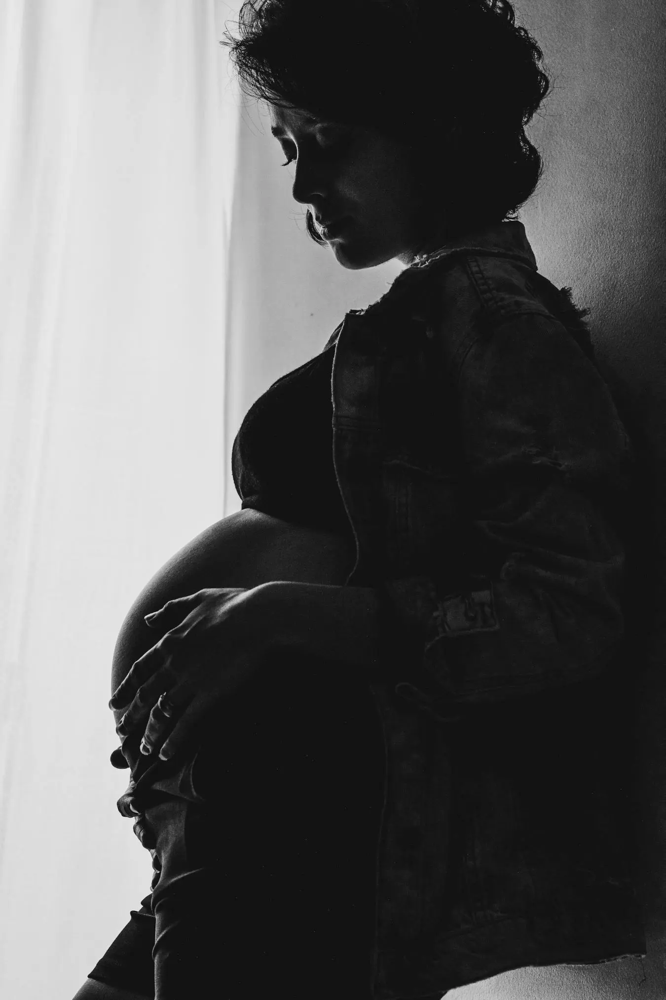
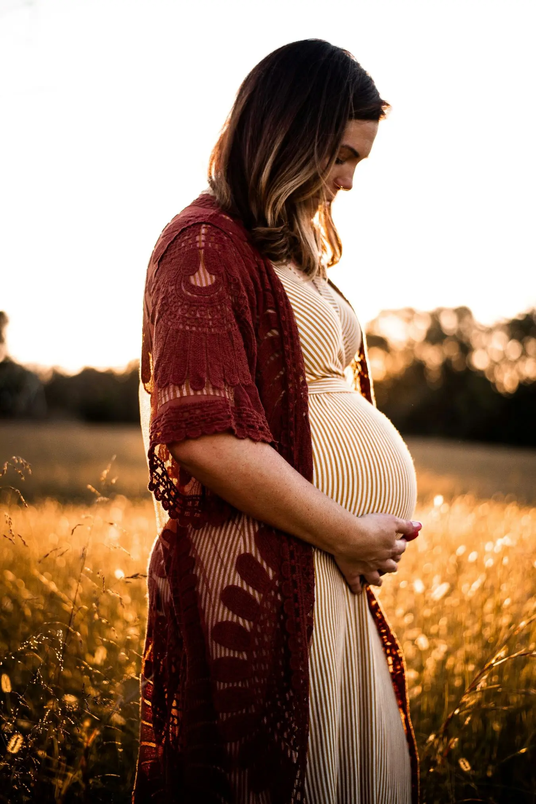
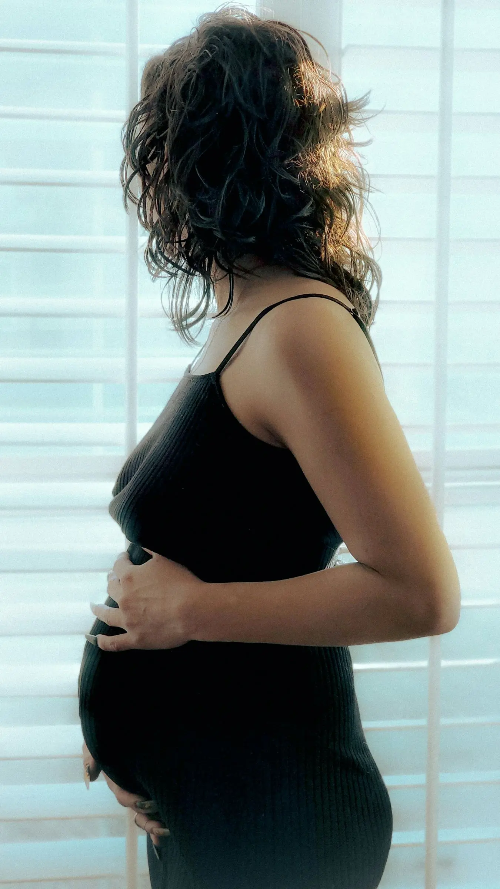
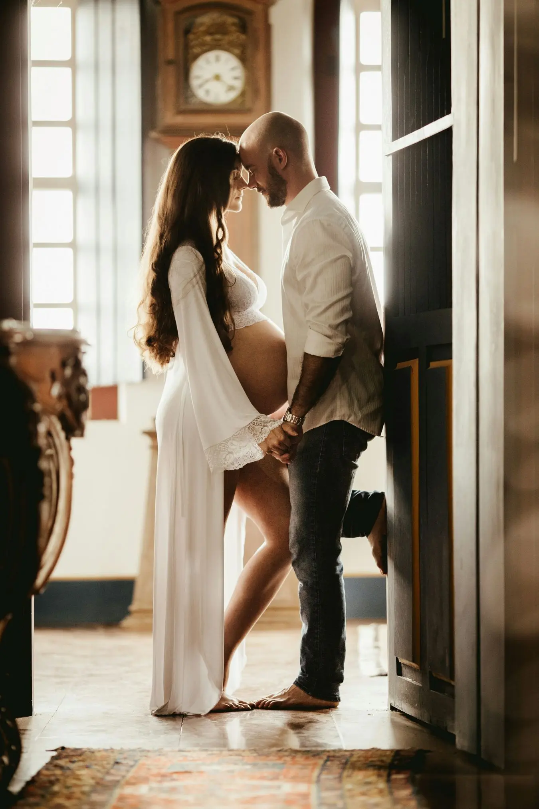
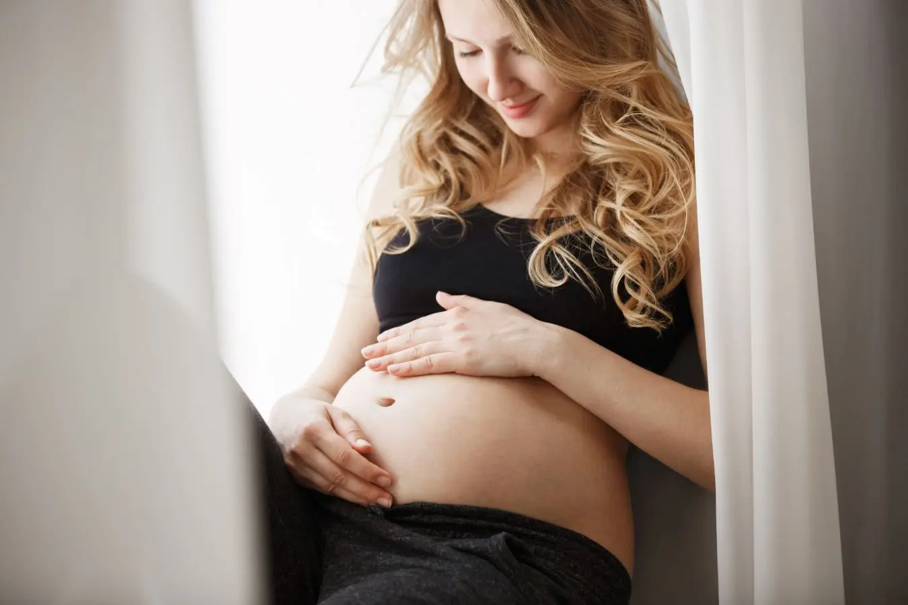
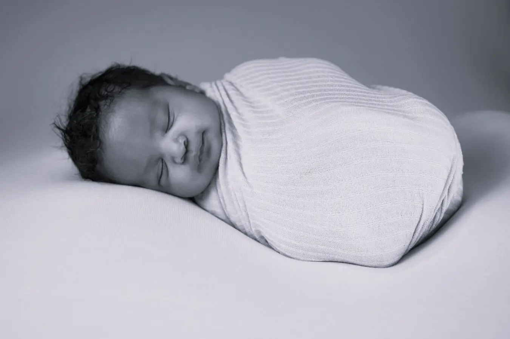

The best time for a newborn photo shoot is between two and four weeks after the baby is born. This is when it is easiest to create beautiful newborn portraits, as babies tend to sleep through most of the session.


NATURAL MATERNITY PHOTOGRAPHY IN NEVADA
Natural, timeless maternity photography
Celebrating Motherhood
Maternity photo shoot in Nevada
Pregnancy is a journey unlike any other. It's a time filled with anticipation, love, and the incredible bond that begins long before you meet your baby. Your changing body tells a beautiful story — one of strength, nurture, and new beginnings.
My maternity photography is designed to celebrate this special chapter of your life. Through natural, timeless images, I capture the beauty of your growing bump, the emotions of motherhood, and the quiet moments of connection before your little one arrives.
These photographs become more than memories. They are a reminder of the excitement, hope, and love that surrounded your baby from the very beginning — a story you'll treasure for years to come.



I found Patrice's work by chance. When I learned I was pregnant, I immediately knew I wanted her to do my maternity photoshoot.

Frequently Asked Questions
It's entirely up to you. You may choose an elegant dress for a more artistic look or simply wear a light, plain T-shirt for a natural, lifestyle feel. The most important thing is that you feel comfortable and confident.
Absolutely. Sessions that include your partner often create some of the most meaningful images, capturing the love you share and the excitement of welcoming your new baby.
Yes. I offer beautifully designed photo albums and photo books that tell the story of your family. Each product is fully personalised to your preferences.
